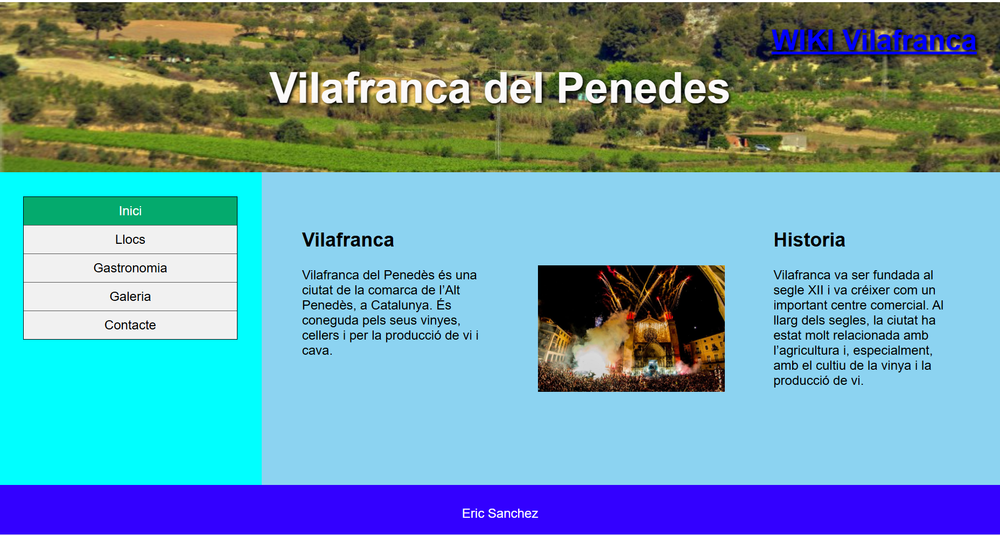

Vilafranca del Penedès
He creat una pàgina web amb HTML per presentar Vilafranca del Penedès. Inclou informació sobre la ciutat, la seva història i alguns dels seus atractius.
La pàgina té un menú per navegar per les seccions i una galeria d’imatges. A la galeria trobaràs imatges relacionades amb Vilafranca i el Penedès.
